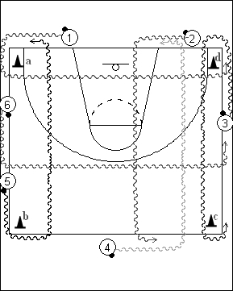

Catégorie : DRIBBLE (Dr-007)
Déroulement
- Les joueurs sont dispersés autour d’un demi-terrain. Des cônes (a, b, c et d) sont disposés aux quatre coins. Chaque joueur possède un ballon.
- Les dribbleurs progressent tous dans le même sens (ici : sens contraire des aiguilles d’une montre) et en dribblant de la même main (donc ici, main droite). Au signal du Coach, ils foncent (toujours en dribble) pour rejoindre le côté opposé et continuer ensuite à dribbler dans le même sens.
- Après un certain temps, on modifie le sens et la main du dribble.
Coaching points
- Il s’agit constamment d’un dribble haut, mais avec un important changement de rythme à chaque coup de sifflet (dribble de contre-attaque pour rejoindre le côté opposé).
- C’est également un excellent drill de split vision, car beucoup de joueurs se croisent lors des traversées.
- Si le nombre de joueurs est trop élevé, on peut procéder de même autout d’un terrain complet, avec cette fois de longues distances en sprint pour les joueurs qui se trouvent à une baseline lors du signal du Coach ...